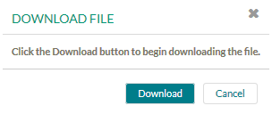

Figure: Correspondence Template docx File
This tutorial example demonstrates how to create correspondence by using templates
including static and dynamic images. We use the
CORRESPONDENCE.xsd schema file, the
LoanCorrespondence example model, the templates
applicant-template.html and applicant-template.docx and example
images from the all-tutorials.zip file. If you have not done already, you
can download the zip file containing these sources from here:
all-tutorials.zip.
You find the example sources in folder correspondence.
The LoanCorrespondence model contains a structured data of the referenced Correspondence structured data type, a Correspondence UI Mashup and a Script application for adding image bookmarks. Templates are provided in HTML and Docx format including images, which will be included in the message.
To start with this example, add the CORRESPONDENCE.xsd file to your projects classpath. This structured data type is described in detail in chapter Using the predefined Structured Data Type for Correspondence in the End User Handbook.
Import the LoanCorrespondence model in the Modeling perspective. The model contains a structured data CORRESPONDENCE of structured data type CORRESPONDENCE containing the imported Correspondence xsd. It also contains two applications, the Correspondence UI Mashup and a Script application for adding image bookmarks. For details on the Correspondence UI Mashup, please refer to chapter Creating a Correspondence UI Mashup in the End User Handbook. Please take care to replace the URL in the mashup configuration with your context root.
Let's have a look at the Prepare Image Locations Script application.
The Script application has the following parameters:
Figure: Script Parameters
The Script Code field contains the following code:
CORRESPONDENCE_OUT = {FieldMetaData: []};
/* Push the "FieldMetaData" array elements. Individual properties:
- Type: Metadata field type. Should always equal "image"
- Name: Word Docx Bookmark Name
- Location: Document Repository image path (prefixed with repository://)
- UseImageSize: Boolean indicating if original image size should be resized
*/
// Example adding a static image bookmark
CORRESPONDENCE_OUT.FieldMetaData.push({
Type : "image",
Name : "OtherLogo",
Location : "repository:///documents/correspondence-templates/logos/sungard.png",
UseImageSize : true
});
// Example adding a dynamic image bookmark based on "CompanyId" Process Data
if (CompanyId) {
CORRESPONDENCE_OUT.FieldMetaData.push({
Type : "image",
Name : "CompanyLogo",
Location : "repository:///documents/correspondence-templates/logos/" + CompanyId + ".png",
UseImageSize : true
});
}
Figure: Script Code
In case the in-parameter CompanyId is empty, a static image bookmark
with location
"repository:///documents/correspondence-templates/logos/sungard.png"
is pushed to the meta data. If CompanyId has a value, this value is used
for a dynamic image bookmark. The location is created dynamically with the provided
CompanyId data value as
"repository:///documents/correspondence-templates/logos/" + CompanyId + ".png".
The Loan Correspondence process has the following workflow:
Figure: Loan Correspondence Process
Templates are provided in HTML and Docx format including images, which will be included in the message.
In the Workflow Execution perspective open the My Documents view. Upload the following correspondence templates, which are provided in the example ZIP file, in the Common Documents > correspondence-templates folder:
applicant-template.htmlapplicant-template.docx
Figure: Uploaded Templates
Create a subfolder logos and upload the example image files
sungard.png and XYZ.png. Hereby,
sungard.png will be used for the static image replacement and
XYZ.png as dynamic image bookmark in our Script application.
Figure: Uploaded images
Our HTML template example has the following content:
<p><img src="data:image/jpeg;base64,$base64Encoder.encodeBase64String($dms.retrieveContent('/documents/correspondence-templates/logos/sungard.png'))"/></p>
<p>Dear <strong>$ApplicantName</strong>,</p>
<p> We have received your loan application, but are missing the following documents.<span style="line-height:1.6em"> </span></p>
<table border="1" cellpadding="1" cellspacing="1" style="width:500px">
<tbody>
<tr>
<td>Driver's License</td>
<td>A copy of your current valid Driver's License is required.</td>
</tr>
<tr>
<td>Pay Slip</td>
<td>A copy of your recent pay stub is required.</td>
</tr>
</tbody>
</table>
<p> Kindly send the above in to us at the earliest.</p>
<p>Sincerely,</p>
<img src="data:image/jpeg;base64,$base64Encoder.encodeBase64String($user.signature)"/>
<p>$user.firstName $user.lastName</p>
<p> </p>
The first line
<p><img src="data:image/jpeg;base64,$base64Encoder.encodeBase64String($dms.retrieveContent('/documents/correspondence-templates/logos/sungard.png'))"/></p>
contains an image link to the logo image we like to display at the top of
the template. This is the sungard.png image we uploaded to the
correspondence-templates/logos folder.
Please refer to section Including Images from the Document Repository of chapter Using Correspondence Templates in the End User Handbook for details on how to include images in templates and message editor source.
The $ApplicantName variable references the Process data path ApplicantName and will be replaced with the value entered for the data accordingly.
The following user attributes are used:
Please refer to section Using User Attributes of chapter Using Correspondence Templates in the End User Handbook for details on how to use user attributes.
The image uploaded for the user signature is used. Please refer to section Including the User Signature of chapter Using Correspondence Templates in the End User Handbook for details on how to include the users signature.
Lets have a look at our docx template file. Open the file to view the content in Microsoft Word.
Figure: Correspondence Template docx File
Two template images are added in the docx file. Bookmarks are linked to these images.
To view the bookmarks:
Create a user with an uploaded signature:
To start the Loan Correspondence Process:
To use the example HTML template, do the following:
Now the message content editor displays the template content with substituted variables, image and signature.
Figure: Message Content with replaced image, variables and signature
Now upload the DOCX template:
applicant-template.docx and click OK.
Additionally we attach a document from our file system:
You see now the attached document listed in the attachments section.
Figure: Attached file from file system
Complete the Loan Correspondence UI Mashup activity. Activity Show Data displays the CORRESPONDENCE meta data.
Figure: Displayed Correspondence data
In the Document Repository view or the Process Documents
section in the process history view of the Loan Correspondence process,
expand the correspondence folder.
You see the created correspondence, named as correspondence-out-x.
It contains the attached docx template as well as the attached local file.
Figure: Correspondence displayed in Process Documents
To view the correspondence in read-only mode, click the created correspondence node
correspondence-out-x.
Figure: Click Correspondence
The correspondence opens in a read-only viewer.
Figure: Viewing the Correspondence in read-only mode
To view the resulting document of the attached DOCX template, you have to download the DOCX document first:

Now open the downloaded document in Microsoft Word. You see the placeholders in the
DOCX template replaced with process data values. The dynamic image reference displays the
XYZ.png image provided in the correspondence-templates/logos
folder as we entered XYZ as Company Id.
This referenced location was created via the Script Application by the following
field meta data assignment:
Location : "repository:///documents/correspondence-templates/logos/" + CompanyId + ".png"
Figure: Resulting DOCX Document